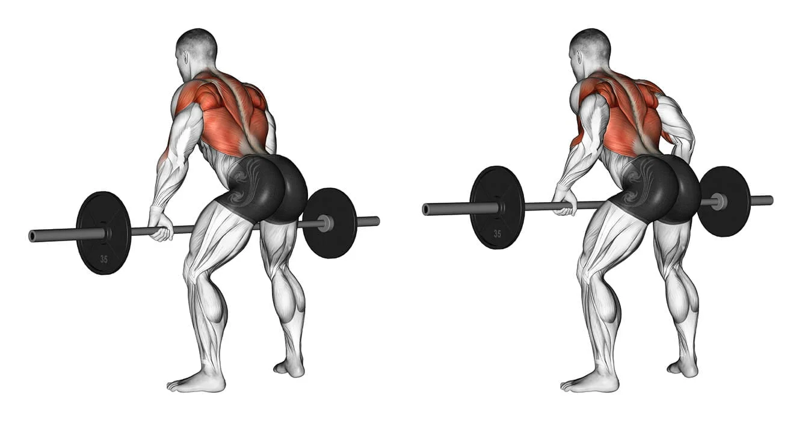
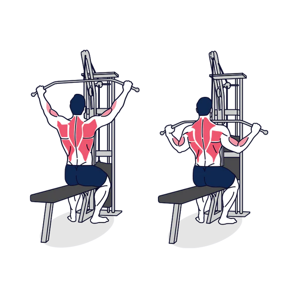
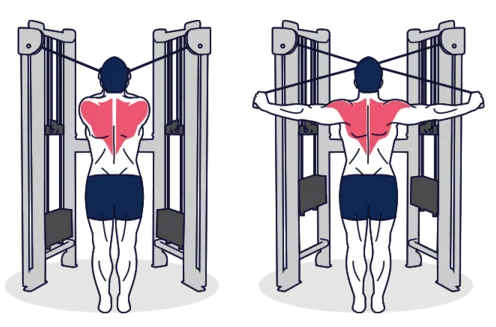
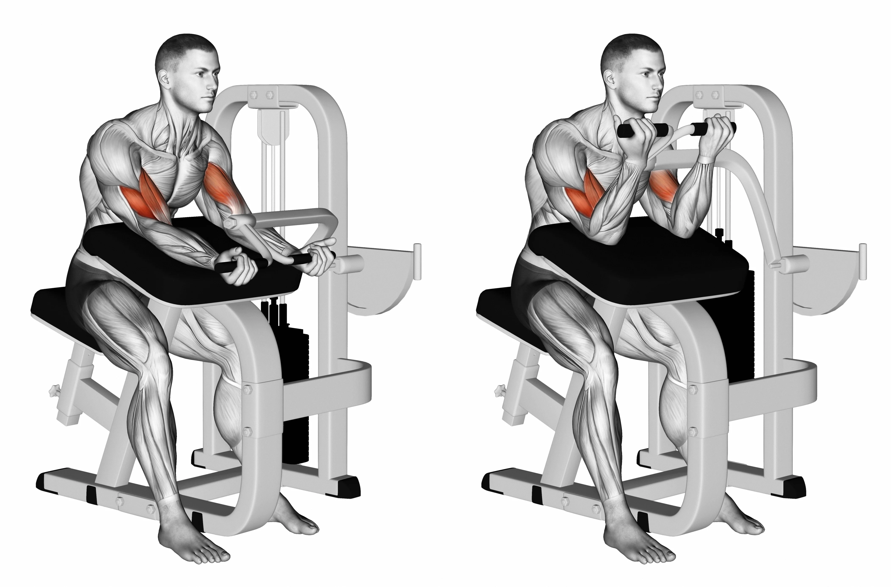
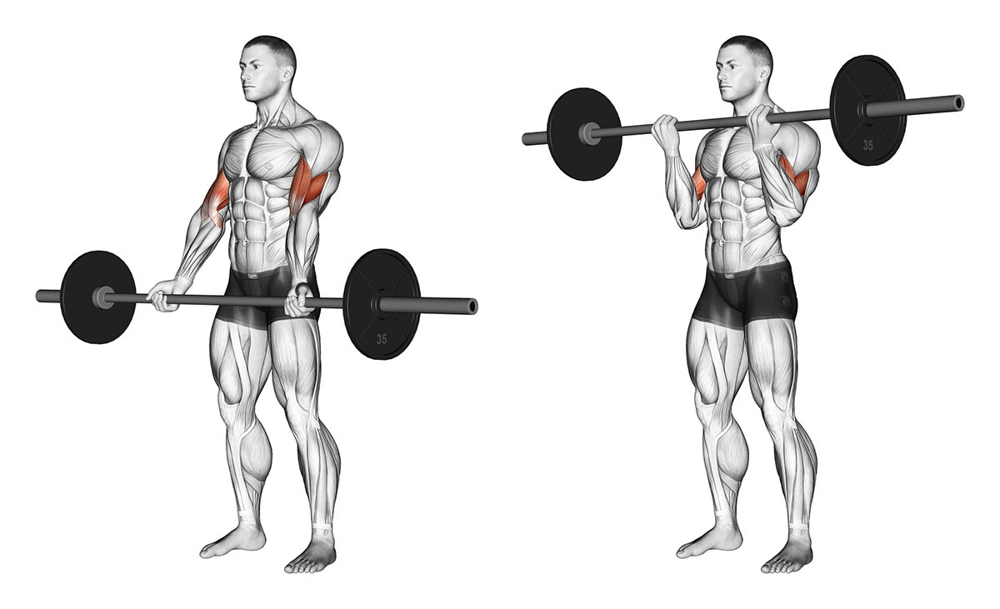

--> Costas, Biceps e posterior de ombro
Nota: Para melhor desenvolvimento, todos os exercícios podem ser feitos com progressão de carga
| Exercício | Repetições X Série | Como fazer |
|---|---|---|
| Remada Curvada | 8-12 X 5 |  |
| Puxada alta com barra | 8-12 X 4 |  |
| remada articulada unilateral |
8-12 X 4 |  |
| deltóide posterior | 10-12 X 3 |  |
| rosca scott máquina | 10-12 X 3 |  |
| Rosca Direta com barra W | 10-12 X 3 |  |